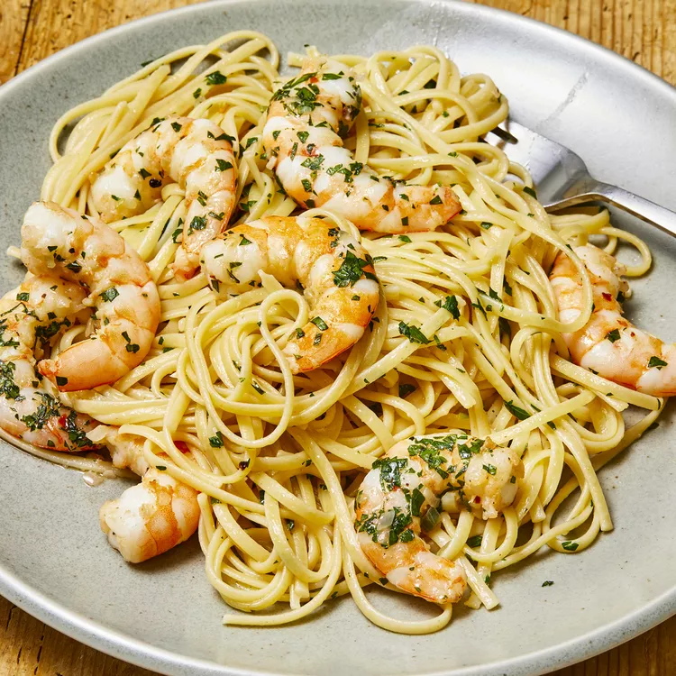

Home
Shrimp Scampi

Description
This seafood staple is a somewhat fast meal that can be made for a family dinner meal or served at a dinner
party. You can swap different pastas out as well depending on your mood (i.e. use angel hair for a lighter
meal).
Ingredients
- 1 (16 ounce) package linguine pasta
- 4 tablespoons butter
- 4 tablespoons extra-virgin olive oil
- 2 shallots, finely diced
- 2 cloves garlic, minced
- 1 pinch red pepper flakes (Optional)
- 1 pound shrimp, peeled and deveined
- 1 pinch kosher salt and freshly ground pepper
- 1/2 cup dry white wine
- 1 lemon, juiced
- 1/4 cup finely chopped fresh parsley leaves
Steps
- Bring a large pot of salted water to a boil; cook linguine in boiling water until nearly tender, 6 to 8
minutes. Drain.
- Melt 2 tablespoons butter with 2 tablespoons olive oil in a large skillet over medium heat. Cook and stir
shallots, garlic, and red pepper flakes in the hot butter and oil until shallots are translucent, 3 to 4
minutes. Season shrimp with kosher salt and black pepper; add to the skillet and cook until pink, stirring
occasionally, 2 to 3 minutes. Remove shrimp from skillet and keep warm.
- Pour white wine and lemon juice into skillet and bring to a boil while scraping the browned bits of food off
of the bottom of the skillet with a wooden spoon. Melt 2 tablespoons butter in skillet, stir 2 tablespoons
olive oil into butter mixture, and bring to a simmer. Toss linguine, shrimp, and parsley in the butter
mixture until coated; season with salt and black pepper. Drizzle with 1 teaspoon olive oil to serve.